Scribbles · App Exploration
Interaction patterns, navigation logic, and component behavior explored across mobile interfaces.
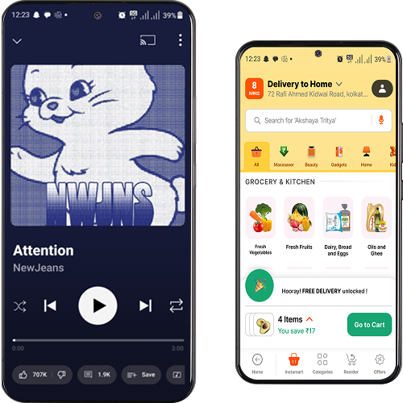
These YouTube screens were recreated as a focused design exercise to understand how large-scale products structure their interfaces — studying grid systems, layout logic, and component behavior.
Original
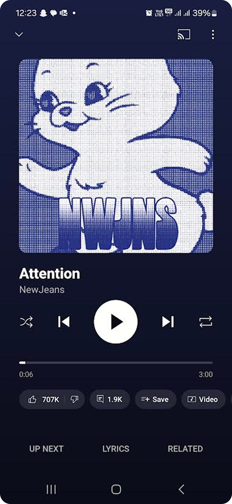
Recreated
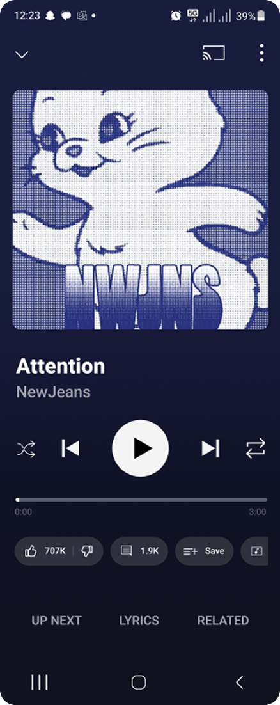
Exploring how components adapt and reflow within constrained mobile screen sizes.
Original
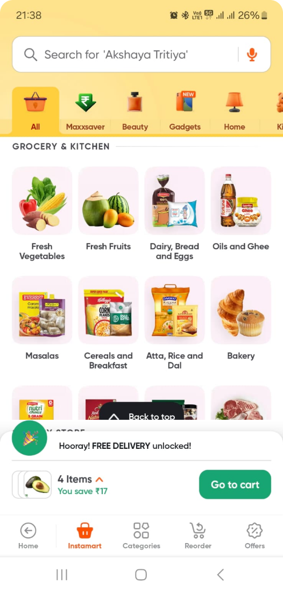
Recreated
Understanding how layout, spacing, and hierarchy support quick decision-making in commerce interfaces.
Map Interface
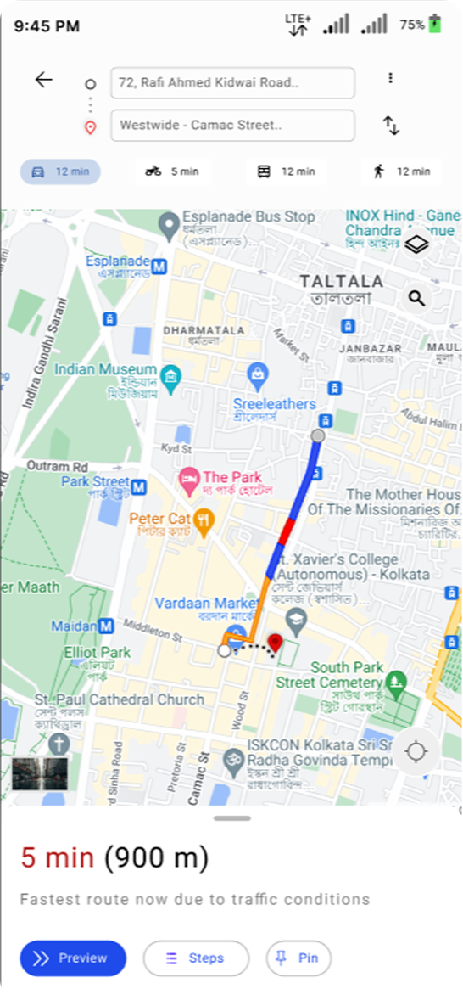
Ride Interface
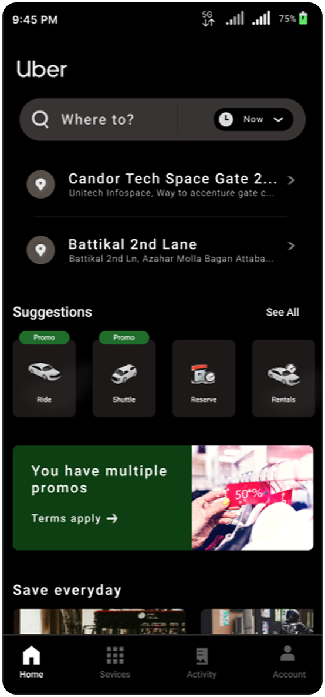
Studying how map-based and list-based interfaces guide quick, confident user actions.
A series of focused recreations exploring usability patterns, hierarchy, and interaction design across different apps.
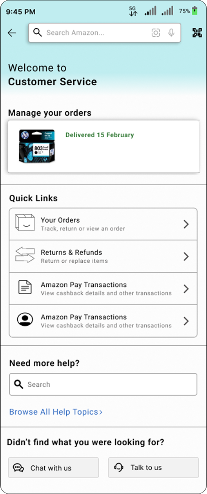
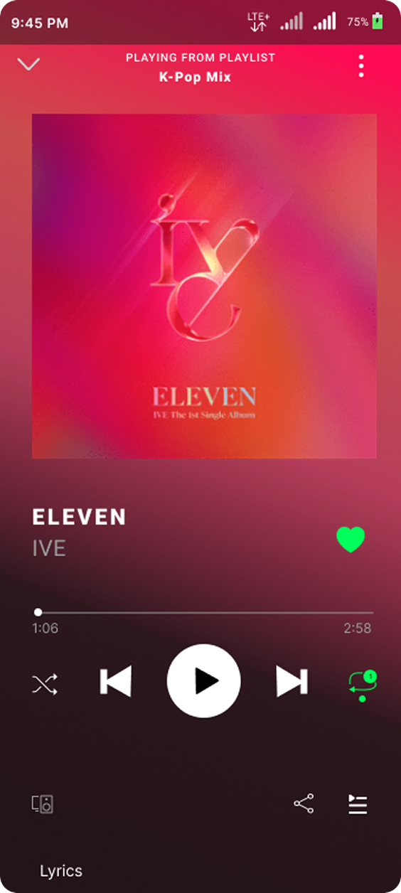
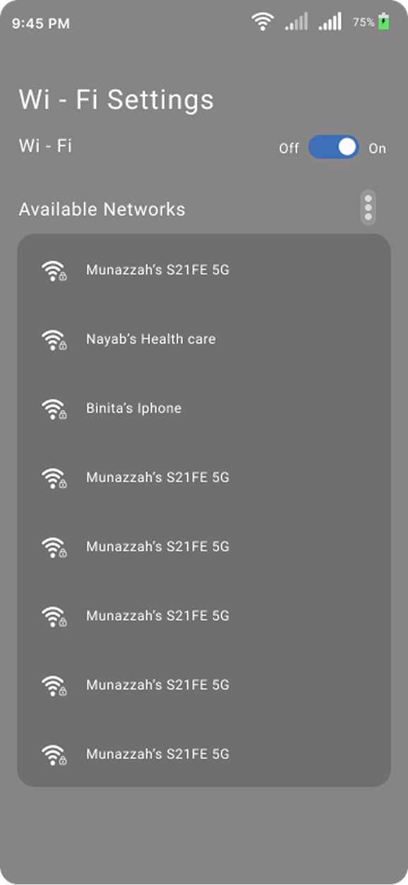
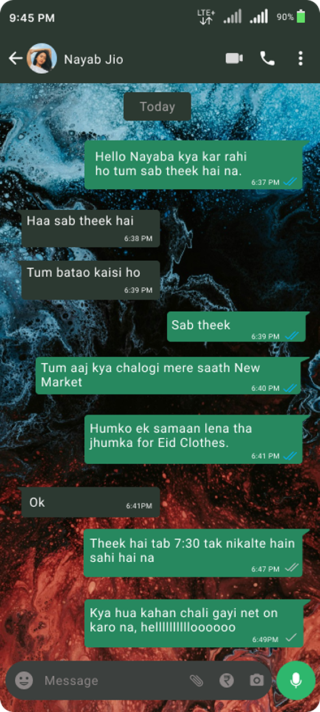
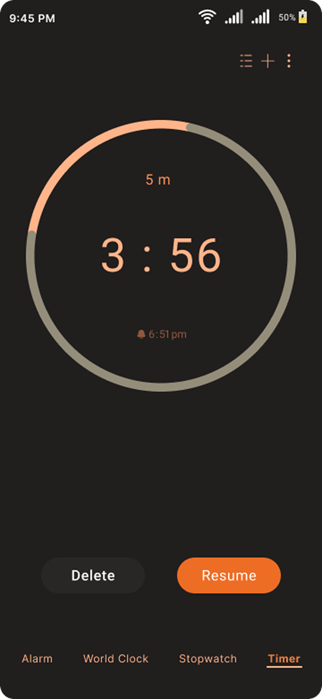
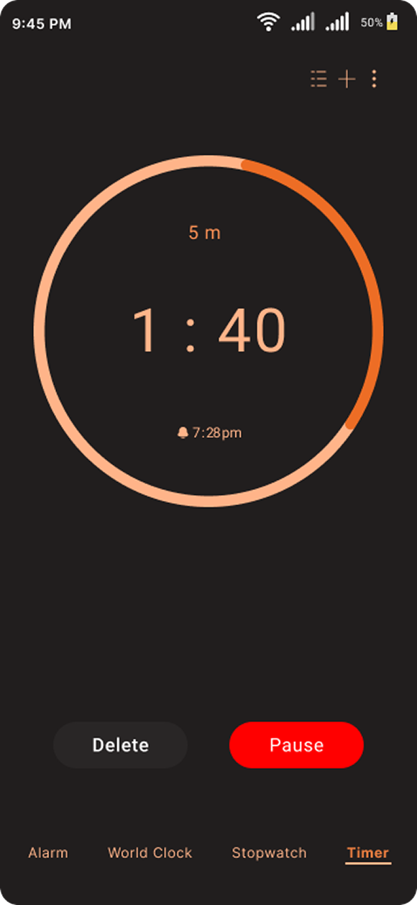
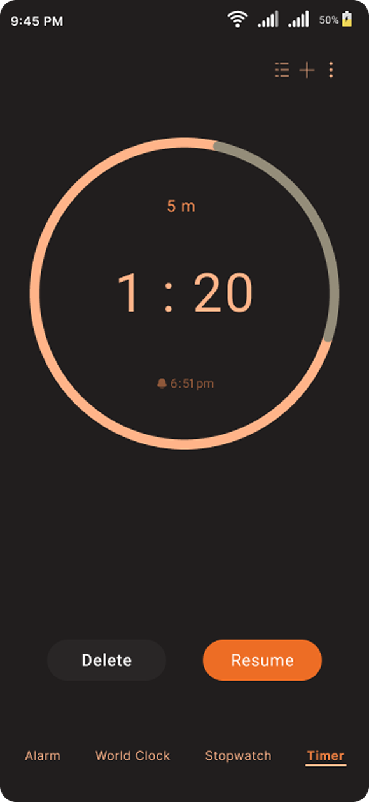
A breakdown of reusable UI elements to understand scalability, consistency, and system-level thinking.
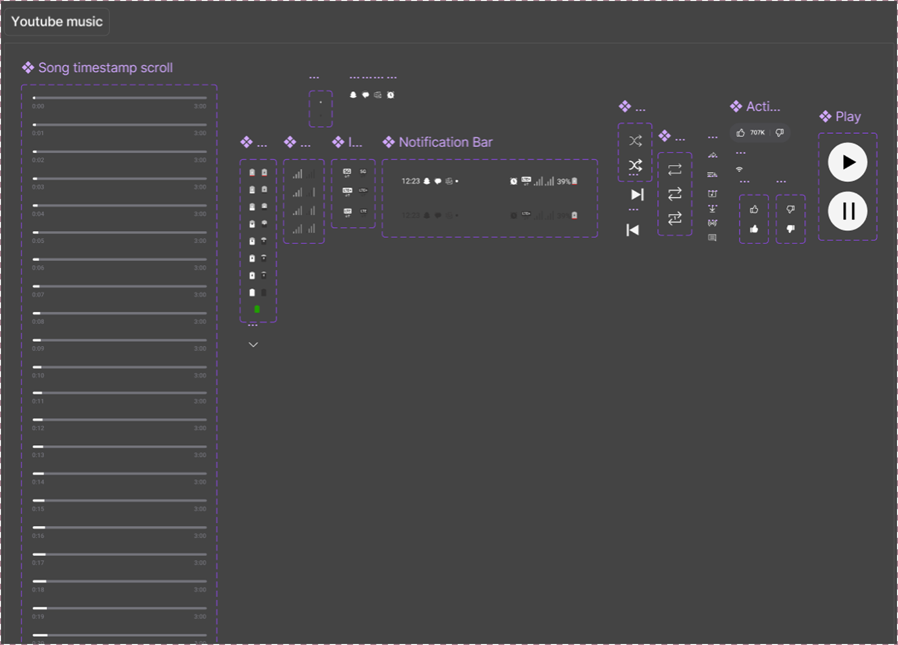
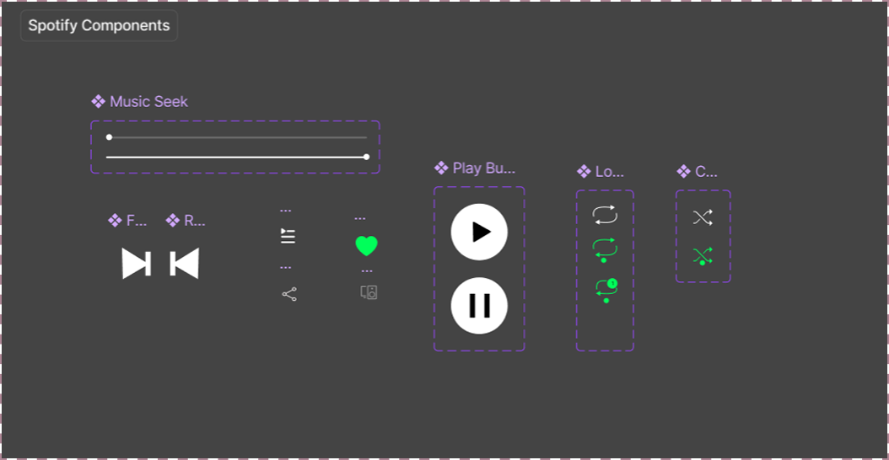
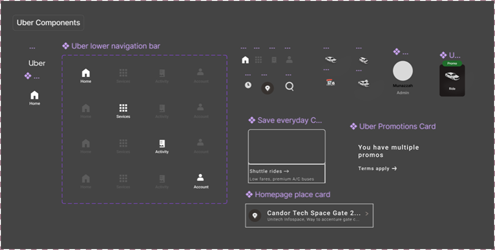
Disclaimer - This is a self-initiated exploration project. All trademarks belong to their respective owners.